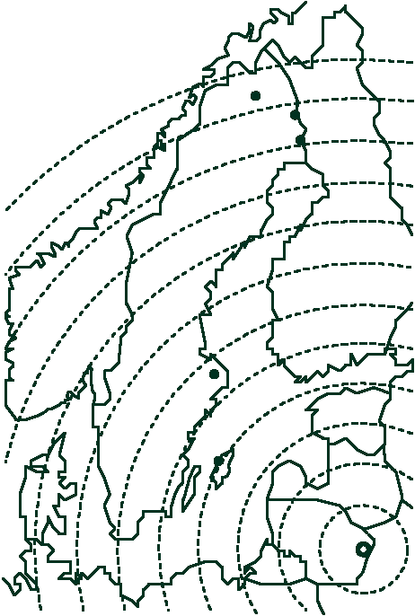

| In the paper an example of how a shift of radiation could spread in case of an incident is considered. In the picture, the shift process is illustrated. The distance between consecutive dashed arcs corresponds to 6 hours assuming that the shift spreads with 5 m/sec. If an incident should have its source in Ignalina this would mean a certain order for the shift process: first 1. Hoburgen, then 2. Alunda. after a 24 hour period 3. Övertorneå , 4. Pajala, and finally 5. Kiruna. |  |